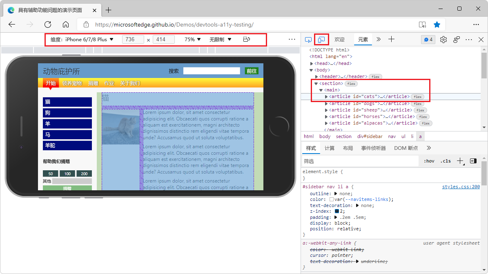

Browser interface
1. Overview
In project development, we often need to deal with the external operating environment, such as running in a browser or running in some small game platforms, we need to obtain device information, etc. The interfaces for these functions are all through Laya.Browser called. Laya.Browser is a browser proxy class that encapsulates some functions provided by the browser and native JavaScript, as well as information about the running environment such as mini games. This chapter will introduce what functions Laya.Browser has:
- Get screen related data
- Call native object
- Judge the operating environment
Below we will explain each in detail
2. Obtain screen related data
Usually we use browsers such as Chrome or MS Edge to develop projects. These browsers provide very convenient DevTools tools for debugging. You can refer to the link below
https://learn.microsoft.com/zh-cn/microsoft-edge/devtools-guide-chromium/overview
As shown in Figure 2-1, the browser provides device emulation mode to facilitate viewing and debugging.

(Figure 2-1)
The iPhone 6/7/8 Plus device is selected in the above picture, but taking iPhone as an example, as the model increases, the resolution of the screen device is also constantly changing, as shown in Figure 2-2

(Figure 2-2)
As you can see from the picture, the physical width and height, DPR, and logical width and height are different.
Therefore, to obtain these screen-related information, the Laya.Browser class provides us with the following methods. Let's take a look at the Laya.Browser related API:
/**
* The visible width of the browser window.
*Obtained by analyzing browser information. The priority of multiple browser attribute values is: window.innerWidth (including scroll bar width) > document.body.clientWidth (excluding scroll bar width). If the former is 0 or empty, the latter is selected.
*/
static get clientWidth(): number {
Browser.__init__();
return Browser._clientWidth || Browser._window.innerWidth || Browser._document.body.clientWidth;
}
static set clientWidth(value: number) {
Browser._clientWidth = value;
}
/**
* The visible height of the browser window.
*Obtained by analyzing browser information. The priority of multiple property values of the browser is: window.innerHeight (including scroll bar height) > document.body.clientHeight (excluding scroll bar height) > document.documentElement.clientHeight (excluding scroll bar height), if the former is 0 or empty, the latter is selected.
*/
static get clientHeight(): number {
Browser.__init__();
return Browser._clientHeight || Browser._window.innerHeight || Browser._document.body.clientHeight || Browser._document.documentElement.clientHeight;
}
static set clientHeight(value: number) {
Browser._clientHeight = value;
}
/** The physical width of the browser window. Device pixel ratio is taken into account. */
static get width(): number {
Browser.__init__();
return ((ILaya.stage && ILaya.stage.canvasRotation) ? Browser.clientHeight : Browser.clientWidth) * Browser.pixelRatio;
}
/** The physical height of the browser window. Device pixel ratio is taken into account. */
static get height(): number {
Browser.__init__();
return ((ILaya.stage && ILaya.stage.canvasRotation) ? Browser.clientWidth : Browser.clientHeight) * Browser.pixelRatio;
}
/** Get the device pixel ratio. */
static get pixelRatio(): number {
if (Browser._pixelRatio < 0) {
Browser.__init__();
if (Browser.userAgent.indexOf("Mozilla/6.0(Linux; Android 6.0; HUAWEI NXT-AL10 Build/HUAWEINXT-AL10)") > -1) Browser._pixelRatio = 2;
else {
Browser._pixelRatio = (Browser._window.devicePixelRatio || 1);
if (Browser._pixelRatio < 1) Browser._pixelRatio = 1;
}
}
return Browser._pixelRatio;
}
2.1 Logical width and height
In the LayaAir engine, you can obtain the width of the logical resolution through Laya.Browser.clientWidth and the height of the logical resolution through Laya.Browser.clientHeight.
In the portrait mode of mobile devices such as mobile phones, the narrow side is width and the long side is height. If the screen is flipped to landscape mode, the long side is the width and the narrow side is the height.
In PC browsers, it is the visible width and height of the browser window obtained.
Most browsers usually call window.innerWidth through JavaScript to obtain the visible width of the browser window. However, some special browsers have differences, so Laya.Browser does a good job of encapsulating these problems and only Just call Browser.clientWidth and Browser.clientHeight.
2.2 Physical width and height (screen width and height)
Physical width and height are also called screen width and height. Developers can use Laya.Browser.width to get the number of pixels on the screen width, and use Laya.Browser.height to get the number of pixels on the screen height.
The screen width and height are the hardware screen width and height only in full screen mode. Developers need to understand that the screen width and height actually refers to the width and height of the running environment window. For example, when running on a browser, it is the width and height of the browser display window.
The physical width and height in the LayaAir engine is calculated by logical width and height * DPR. DPR is the device pixel ratio to be introduced below.
2.3 Device pixel ratio
The DPR in Figure 2-2 is the device pixel ratio, which developers can obtain through Laya.Browser.pixelRatio
Through logical width and height. Only by physical width and height and device pixel ratio can we better achieve screen adaptation. If you want to know more detailed screen adaptation, please refer to "Screen Adaptation" document
3. Call native objects
Usually native objects include the following:
- document Dom
- window
- container canvas
Laya.Browser also encapsulates calls to these objects for us. Take a look at the API:
/**Reference to the browser’s native document object. */
static get document(): any {
Browser.__init__();
return Browser._document;
}
/**Reference to the browser’s native window object. */
static get window(): any {
return Browser._window || Browser.__init__();
}
/**Canvas container, a container used to hold canvas. Convenient to control the canvas*/
static get container(): any {
if (!Browser._container) {
Browser.__init__();
Browser._container = Browser.createElement("div");
Browser._container.id = "layaContainer";
Browser._document.body.appendChild(Browser._container);
}
return Browser._container;
}
static set container(value: any) {
Browser._container = value;
}
3.1 document Dom
In the LayaAir engine, you can obtain the native document object through Laya.Browser.document.
At the same time, Laya.Browser also provides methods for using Dom node elements:
/**
* Create browser native nodes.
* @param type node type.
* @return A reference to the created node object.
*/
static createElement(type: string): any {
Browser.__init__();
return Browser._document.createElement(type);
}
/**
* Returns a reference to the first object in the Document object with the specified id.
* @param type node id.
* @return node object.
*/
static getElementById(type: string): any {
Browser.__init__();
return Browser._document.getElementById(type);
}
/**
* Remove the specified browser native node object.
* @param type node object.
*/
static removeElement(ele: any): void {
if (ele && ele.parentNode) ele.parentNode.removeChild(ele);
}
Some problems can be solved by interacting with the native Dom. For example, LayaAir uses the HTML DOM element iframe.
When inserting some third-party websites, we generally use iframes, and even third-party channels basically use iframes to embed an application. We will also encounter the use of iframes in our projects. The following example demonstrates the application of iframe in the project.
The code looks like this:
var iframe:any = Laya.Browser.document.createElement("iframe");
iframe.style.position="absolute";//Set layout positioning. This cannot be missing.
iframe.style.zIndex = 100;//Set level
iframe.style.left ="100px";
iframe.style.top ="100px";
iframe.src = "http://ask.layaair.com/";
Laya.Browser.document.body.appendChild(iframe);
What developers need to remind here is to remember to set the positioning and level. Many developers are not careful and cause the iframe to go under the game layer and become invisible.
3.2 window window
In the LayaAir engine, you can obtain the native window object through Laya.Browser.window.
For example, we want to use window.open(url) in the project to open another web page to transfer data. The sample code is as follows:
//Get to send data
Laya.Browser.window.open("https://layaair.com/");
//Post sends data
//url must be a real address, content represents the data to be sent
let win2 = Laya.Browser.window.open(url);
win2.postMessage(content, url);//It is best to add a delay here
//Listener registration
Laya.Browser.window.addEventListener("click", (event: any) => {
console.log(event.type);
})
Window.open() 方法、window.postMessage()方法、Window.addEventListener()方法
3.3 container canvas
The canvas container can be obtained through Laya.Browser.container in the LayaAir engine.
For example, we can hide the canvas and only display the Dom page:
Laya.Browser.container.style.display = "none";
Style display attribute
4. Determine the operating environment
When developing cross-platform projects, it is often necessary to deal with compatibility issues on different platforms, and different operating environments will have different handling methods. The Laya.Browser class determines these operating environments. For us developers, to determine the operating environment, we only need to directly call the interface of the Laya.Browser class. So far, these interfaces can be used
/** Indicates whether it is on a mobile device, including IOS and Android devices. */
static onMobile: boolean;
/** Indicates whether it is in an IOS device. */
static onIOS: boolean;
/** Indicates whether it is on a Mac device. */
static onMac: boolean;
/** Indicates whether it is within the iPhone device. */
static onIPhone: boolean;
/** Indicates whether it is within the IPad device. */
static onIPad: boolean;
/** Indicates whether it is in an Android device. */
static onAndroid: boolean;
/** Indicates whether it is in QQ browser. */
static onQQBrowser: boolean;
/** Indicates whether it is in mobile QQ or QQ browser. */
static onMQQBrowser: boolean;
/** Indicates whether it is in Safari. */
static onSafari: boolean;
/** Indicates whether it is in Chrome */
static onChrome: boolean;
/** Indicates whether it is in IE browser*/
static onIE: boolean;
/** Indicates whether it is in WeChat*/
static onWeiXin: boolean;
/** Indicates whether it is on PC. */
static onPC: boolean;
/** WeChat mini game **/
static onMiniGame: boolean;
/** Xiaomi Mini Games **/
static onKGMiniGame: boolean;
/** OPPO mini games **/
static onQGMiniGame: boolean;
/** VIVO mini-game **/
static onVVMiniGame: boolean;
/** Douyin mini game*/
static onTTMiniGame: boolean;
/** @private */
static onFirefox: boolean;//TODO: Please add more
/** @private */
static onEdge: boolean;//TODO: Please add more
/** @private */
static onLayaRuntime: boolean;
For example, we can judge in code like this:
//If it is Chrome browser
if (Laya.Browser.onChrome) {
console.log("Chrome");
}